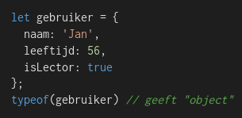

Wat?
Intro JavaScript van cursus: "JS intro"
- Cross-platvorm programmeer taal.
- Supported bij alle browsers.
- Client-side
- in browser
- makes websites interactive: animaties, clicking on HTML elements...
- DOM Document Object Model
- Fetch data from a server to display to users
- Server-side
- Stand-alone, zonder een browser. (with a library bv NodeJS)
- Develp a back-end app (databse queries, file manipulation,...)
Variables
Declaring & Assigning:
- let myName = 'John'; "zo moet de input van myName er uit zien."
- myName = 'Lana';
- let myAge = 45; "zo moet de input van myAge er uit zien."
- myAge = 19;
Constants
- Kan geen nieuwe value krijgen == een constante waarde.
- const myName = 'John';
- myName = "Lana"; ==> error
- Liever const gebruiken dan let --> resultaat is een mooiere code. je kan datatypes in JS veranderen met een nieuwe assignment, kan dus onverwachte resultaten geven.
Datatypes
Varible types
- let myName = 'John'; string
- let myAge = 45; number (int & floats)
- let isOld = False; boolean
- let childeren = ['Tim', 'Suzy'] array
- let identity = {name: 'John', age: 45} object
Operators & conditionals
Arithmetic
- optellen = +
- delen = /
- modulo = %
- machten = **
Conditionals
- Comparing:
- < is Kleiner dan
- > is Groter dan
- <= is kleiner dan of gelijk aan
- >= is groter dan of gelijk aan
- Bij vergelijken van een nummer en string: string wordt eerst omgezet naar nummer.
- Strict eauality:
- 3 === '3' --> false
- 3 !== '3' --> true
- if / then / else
- logical Operators
- && = and
- || = or
- Ternary operator
- ? = if
- : = else
Bekijkt of twee operatoren gelijk zijn aan elkaar en geeft boolean terug.
Meer informatie op deze site.

Meer informatie over operators: w3schools
Andere / kortere manier voor if/else:
console.log(myAge < 18 ? 'Child' : 'Adult');
Functions
- Classic
- Modern: arrow functions
- Shorthand version, if function contains 1 line:


Gebruik Javascript als functionele taal. Je kan veel met functies doen bv toewijze aan variabelen, parameters...
Objects
- Declaring and using objects
- Destructuring object fields in variables
- In een object kan je een verzameling van verschillende soorten complexe data stoppen.
- Maak met {...} die een optionele lijst van eigenschappen bevatten. ('key:value') 
- Ook waarde opvragen door haakjes-notatie: gebruiker['naam'] Dit is handig als je de eigenschap niet kent maar bv in een variable hebt staan. gebruiker[eigenschap]
- Je kan een eigenschap toevoegen aan een object door:
- gebruiker.lengte = 187
- Door delete te gebruiken kan een eigenschap verwijderen.
- Je kan een object in een ander object stoppen. Dit is een geneste object.


Object { naam: "Jan", leeftijd: 56, isLector: true, lengte: 187 }
let gebruiker = { naam: 'Jan', adres: {straat: 'Kerkstraat', nummer: 12 } }
Meer informatie kan je hier vinden.
Array
- = geordende lijst van waarden.
- tussen [] gescheiden met ,
- lijst van citaten
Meer informatie over array's.
DOM
"Document Object Model
- Interactief maken van websites
- html en xml
- HTML elementen: div, p, button, ...
- Attributen van deze elementen: id, class, scr, ...
- Tekst tussen HTML elementen: inhoud in <p> tag
- DOM manipulatie?
Meer informatie kan je hier vinden.
Events
Oude manier:
- HTML-atribuut
- Combinatie van HTML, CSS, JS
- DOM-eigenschap
Nieuwe manier
Meer informatie kan je hier vinden.